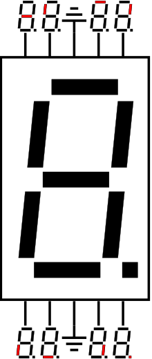

Seven-segment display
A seven-segment display (SSD), or seven-segment indicator, is a form of electronic display device for displaying decimal numerals that is an alternative to the more complex dot matrix displays.
Seven-segment displays are widely used in digital clocks, electronic meters, basic calculators, and other electronic devices that display numerical information.

Concept and visual structure
The seven elements of the display can be lit in different combinations to represent the Arabic numerals. Often the seven segments are arranged in an oblique (slanted) arrangement, which aids readability.[citation needed] In most applications, the seven segments are of nearly uniform shape and size (usually elongated hexagons, though trapezoids and rectangles can also be used), though in the case of adding machines, the vertical segments are longer and more oddly shaped at the ends in an effort to further enhance readability.
The numerals 6 and 9 may be represented by two different glyphs on seven-segment displays, with or without a 'tail'.[2][3] The numeral 7 also has two versions, with or without segment F.
The seven segments are arranged as a rectangle of two vertical segments on each side with one horizontal segment on the top, middle, and bottom. Additionally, the seventh segment bisects the rectangle horizontally. There are also fourteen-segment displays and sixteen-segment displays (for full alphanumerics); however, these have mostly been replaced by dot matrix displays. Twenty-two segment displays capable of displaying the full ASCII character set[5] were briefly available in the early 1980s, but did not prove popular.
The segments of a 7-segment display are referred to by the letters A to G, where the optional decimal point (an "eighth segment", referred to as DP) is used for the display of non-integer numbers.[6][7]

Implementations
Seven-segment displays may use a liquid crystal display (LCD), a light-emitting diode (LED) for each segment, or other light-generating or controlling techniques such as cold cathode gas discharge (Panaplex), vacuum fluorescent, incandescent filaments (Numitron), and others. For gasoline price totems and other large signs, vane displays made up of electromagnetically flipped light-reflecting segments (or "vanes") are still commonly used. An alternative to the 7-segment display in the 1950s through the 1970s was the cold-cathode, neon-lamp-like nixie tube. Starting in 1970, RCA sold a display device known as the Numitron that used incandescent filaments arranged into a seven-segment display.[8]
In a simple LED package, typically all of the cathodes (negative terminals) or all of the anodes (positive terminals) of the segment LEDs are connected and brought out to a common pin; this is referred to as a "common cathode" or "common anode" device.[7] Hence a 7 segment plus decimal point package will only require nine pins, though commercial products typically contain more pins, and/or spaces where pins would go, in order to match standard IC sockets. Integrated displays also exist, with single or multiple digits. Some of these integrated displays incorporate their own internal decoder, though most do not: each individual LED is brought out to a connecting pin as described.
Multiple-digit LED displays as used in pocket calculators and similar devices used multiplexed displays to reduce the number of I/O pins required to control the display. For example, all the anodes of the A segments of each digit position would be connected together and to a driver circuit pin, while the cathodes of all segments for each digit would be connected. To operate any particular segment of any digit, the controlling integrated circuit would turn on the cathode driver for the selected digit, and the anode drivers for the desired segments; then after a short blanking interval the next digit would be selected and new segments lit, in a sequential fashion. In this manner an eight digit display with seven segments and a decimal point would require only 8 cathode drivers and 8 anode drivers, instead of sixty-four drivers and IC pins.[9] Often in pocket calculators the digit drive lines would be used to scan the keyboard as well, providing further savings; however, pressing multiple keys at once would produce odd results on the multiplexed display.
Although to a naked eye all digits of an LED display appear lit, the implementation of a typical multiplexed display described above means that in reality only a single digit is lit at any given time.
A single byte can encode the full state of a 7-segment-display. The most popular bit encodings are gfedcba and abcdefg, where each letter represents a particular segment in the display. In the gfedcba representation, a byte value of 0x06 would (in a common anode circuit) turn on segments 'c' and 'b', which would display a '1'.
